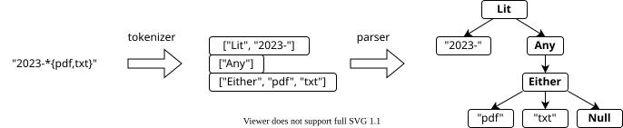
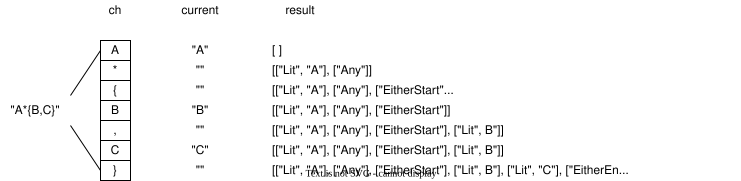
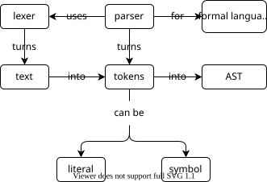

Parsing Text
- Parsing transforms text that's easy for people to read into objects that are easy for computers to work with.
- A grammar defines the textual patterns that a parser recognizes.
- Most parsers tokenize input text and then analyze the tokens.
- Most parsers need to implement some form of precedence to prioritize different patterns.
- Operations like addition and function call work just like user-defined functions.
- Programs can overload built-in operators by defining specially-named methods that are recognized by the compiler or interpreter.
We constructed objects to match patterns in Chapter 4,
but an expression like "2023-*{pdf,txt}"
is a lot easier to read and write
than code like Lit("2023-", Any(Either("pdf", "txt"))).
If we want to use the former,
we need a parser
to convert those human-readable strings into machine-comprehensible objects.
Table 1 shows the grammar our parser will handle.
When we are done,
our parser should be able to recognize that 2023-*.{pdf,txt} means
the literal 2023-,
any characters,
a literal .,
and then either a literal pdf or a literal txt.
| Meaning | Character |
|---|---|
| Any literal character c | c |
| Zero or more characters | * |
| Alternatives | {x,y} |
Please Don't Write Parsers
Languages that are comfortable for people to read and write are usually difficult for computers to understand and vice versa, so we need parsers to translate the former into the latter. However, the world doesn't need more file formats: please use CSV, JSON, YAML, or something else that already has an acronym rather than inventing something of your own.
Tokenizing
Most parsers are written in two parts (Figure 1).
The first stage groups characters into atoms of text called "tokens",
which are meaningful pieces of text
like the digits making up a number or the letters making up a variable name.
Our grammar's tokens are the special characters ,, {, }, and *.
Any sequence of one or more other characters is a single multi-letter token.
This classification determines the design of our tokenizer:
-
If a character is not special, then append it to the current literal (if there is one) or start a new literal (if there isn't).
-
If a character is special, then close the existing literal (if there is one) and create a token for the special character. Note that the
,character closes a literal but doesn't produce a token.

The result of tokenization is a flat list of tokens. The second stage of parsing assembles tokens to create an abstract syntax tree (AST) that represents the structure of what was parsed. We will re-use the classes defined in Chapter 4 for this purpose.
Before we start writing our tokenizer, we have to decide whether to implement it as a set of functions or as one or more classes. Based on previous experience, we choose the latter: this tokenizer is simple enough that we'll only need a handful of functions, but one capable of handling a language like Python would be much larger, and classes are a handy way to group related functions together.
The main method of our tokenizer looks like this:
def tok(self, text):
self._setup()
for ch in text:
if ch == "*":
self._add("Any")
elif ch == "{":
self._add("EitherStart")
elif ch == ",":
self._add(None)
elif ch == "}":
self._add("EitherEnd")
elif ch in CHARS:
self.current += ch
else:
raise NotImplementedError(f"what is '{ch}'?")
self._add(None)
return self.result
This method calls self._setup() at the start
so that the tokenizer can be re-used.
It doesn't call self._add() for regular characters;
instead,
it creates a Lit entry when it encounters a special character
(i.e., when the current literal ends)
and after all the input has been parsed
(to capture the last literal).
The method self._add adds the current thing to the list of tokens.
As a special case,
self._add(None) means "add the literal but nothing else"
(Figure 2):
def _add(self, thing):
if len(self.current) > 0:
self.result.append(["Lit", self.current])
self.current = ""
if thing is not None:
self.result.append([thing])

Finally, we work backward to initialize the tokenizer when we construct it and to define the set of characters that make up literals:
CHARS = set(string.ascii_letters + string.digits)
class Tokenizer:
def __init__(self):
self._setup()
def _setup(self):
self.result = []
self.current = ""
A Simple Constant
The code fragment above defines CHARS to be
a set containing ASCII letters and digits.
We use a set for speed:
if we used a list,
Python would have to search through it each time we wanted to check a character,
but finding something in a set is much faster.
Chapter 17 will explain why the word "ASCII" appears in
string library's definition of characters,
but using it and string.digits greatly reduces the chances of us
typing "abcdeghi…yz" rather than "abcdefghi…yz".
(The fact that it took you a moment to spot the missing letter 'f'
proves this point.)
We can now write a few tests to check that the tokenizer is producing a list of lists in which each sub-list represents a single token:
def test_tok_empty_string():
assert Tokenizer().tok("") == []
def test_tok_any_either():
assert Tokenizer().tok("*{abc,def}") == [
["Any"],
["EitherStart"],
["Lit", "abc"],
["Lit", "def"],
["EitherEnd"],
]
Parsing
We now need to turn the list of tokens into a tree.
Just as we used a class for tokenizing,
we will create one for parsing
and give it a _parse method to start things off.
This method doesn't do any conversion itself.
Instead,
it takes a token off the front of the list
and figures out which method handles tokens of that kind:
def _parse(self, tokens):
if not tokens:
return Null()
front, back = tokens[0], tokens[1:]
if front[0] == "Any": handler = self._parse_Any
elif front[0] == "EitherStart": handler = self._parse_EitherStart
elif front[0] == "Lit": handler = self._parse_Lit
else:
assert False, f"Unknown token type {front}"
return handler(front[1:], back)
The handlers for Any and Lit are straightforward:
def _parse_Any(self, rest, back):
return Any(self._parse(back))
def _parse_Lit(self, rest, back):
return Lit(rest[0], self._parse(back))
Either is a little messier.
We didn't save the commas,
so we'll just pull two tokens and store them
after checking to make sure that we actually have two tokens:
def _parse_EitherStart(self, rest, back):
if (
len(back) < 3
or (back[0][0] != "Lit")
or (back[1][0] != "Lit")
or (back[2][0] != "EitherEnd")
):
raise ValueError("badly-formatted Either")
left = Lit(back[0][1])
right = Lit(back[1][1])
return Either([left, right], self._parse(back[3:]))
An alternative approach is to take tokens from the list
until we see an EitherEnd marker:
def _parse_EitherStart(self, rest, back):
children = []
while back and (back[0][0] == "Lit"):
children.append(Lit(back[0][1]))
back = back[1:]
if not children:
raise ValueError("empty Either")
if back[0][0] != "EitherEnd":
raise ValueError("badly-formatted Either")
return Either(children, self._parse(back[1:]))
This achieves the same thing in the two-token case but allows us to write alternatives with more options without changing the code (assuming you solved the "Multiple Alternatives" exercise in Chapter 4). Tests confirm that we're on the right track:
def test_parse_either_two_lit():
assert Parser().parse("{abc,def}") == Either(
[Lit("abc"), Lit("def")]
)
This test assumes we can compare Match objects using ==,
just as we would compare numbers or strings.
so we add a __eq__ method to our classes:
class Match:
def __init__(self, rest):
self.rest = rest if rest else Null()
def __eq__(self, other):
return (other is not None and
self.__class__ == other.__class__ and
self.rest == other.rest)
class Lit(Match):
def __init__(self, chars, rest=None):
super().__init__(rest)
self.chars = chars
def __eq__(self, other):
return super().__eq__(other) and (
self.chars == other.chars
)
Since we're using inheritance to implement our matchers,
we write the check for equality in two parts.
The parent class Match performs the checks that all classes need to perform
(in this case,
that the objects being compared have the same
concrete class).
If the child class needs to do any more checking
(for example, that the characters in two Lit objects are the same)
it calls up to the parent method first,
then adds its own tests.
They're Just Methods
Operator overloading
relies on the fact that when Python sees a == b it calls a.__eq__(b).
Similarly,
a + b is "just" a call to a.__add__(b),
so if we create methods with the right names,
we can manipulate objects using familiar operations.
Summary
Figure 3 summarizes the key ideas in this chapter. Once again, while it's useful to understand how parsers work, please don't create new data formats that need new parsers if you can possibly avoid it.

Exercises
Escape Characters
Modify the parser to handle escape characters,
so that (for example) \* is interpreted as a literal '*' character
and \\ is interpreted as a literal backslash.
Character Sets
Modify the parser so that expressions like [xyz] are interpreted to mean
"match any one of those three characters".
(Note that this is a shorthand for {x,y,z}.)
Negation
Modify the parser so that [!abc] is interpreted as
"match anything except one of those three characters".
Nested Lists
Write a function that accepts a string representing nested lists containing numbers
and returns the actual list.
For example, the input [1, [2, [3, 4], 5]]
should produce the corresponding Python list.
Simple Arithmetic
Write a function that accepts a string consisting of numbers
and the basic arithmetic operations +, -, *, and /,
and produces a nested structure showing the operations
in the correct order.
For example,
1 + 2 * 3 should produce
["+", 1, ["*", 2, 3]].